Тема 12. ЗАДАЧА
РАСПОЗНАВАНИЯ ОБРАЗОВ
12.1. Классификация
группы объектов.
Первым в
последовательности приема, хранения и обработки информации во всякой
технической системе или живом
организме является этап распознавания. На этом этапе определяется, с объектами
какого класса осуществляется общение.
В соответствии с
геометрическим подходом к распознаванию образов любой исследуемый объект можно
представить точкой (вектором) 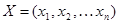 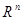
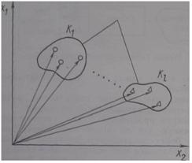
Рис. 12.1. Собственные
области классов
Каждый из объектов
принадлежит к одному из конечного числа
классов 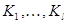
Задачей распознавания
является отнесение предъявленных объектов с неизвестной классификацией к
одному из рассматриваемых классов. При этом распознавание производится по
признаку попадания конца вектора в соответствующую область решения, которая
некоторым образом аппроксимирует собственную область данного класса. Области
решений для каждого из классов 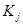 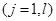
Исходя из
условий однозначности классификации объектов области решений
формируются как непересекающиеся. В случае необходимости вводится нуль-класс,
который объеденяет множество точек , не прошедших ни в одну из областей решения
рассматриваемых классов. Если объект попадает в область решения,
соответствующую этому классу, то он классифицируется как неопознанный.
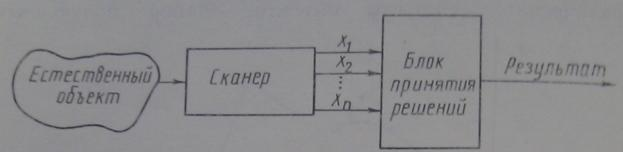
Рис. 12.2. Модель системы распознавания образов.
Функции,
описывающие поверхности, разделяющие области решений, называются решающими.
Рассмотрим
простейшую модель системы распознавания, типичную для дистанционного
зондирования. На борту летательного аппарата (самолета или спутника) размещен
многоспектральный сканер, который служит датчиком для съема информации. Выходом
такого датчика является набор из n
измерений, каждое из которых соответствует одному из каналов сканера. Предполагается,
что все измерения одного элемента разрешения земной поверхности делаются
одновременно. В результате объект наблюдения представляется n-мерным вектором X. Блок принятия решений (классификатор) относит каждый такой
вектор к одному из предварительно заданных классов в соответствии с некоторым
классифицированным правилом. В качестве классов, например, могут задаваться
различные типы покрова земной поверхности: растительность, вода и т. д.
Измерения нескольких
объектов, условно относящихся к одному типу покрова, но полученных для
различных участков Земли при различных условиях, представляются не одной
точкой, а локализуются в пространстве измерений в виде кластера (рис. 12.3),
что является результатом присущих природе случайностей, шума аппаратуры
дистанционного зондирования и т. д. Вместе с тем кластеры с элементами
определенного типа покрова обычно более или менее различимы. Это позволяет
установить связь между локализованными областями пространства измерений
(признаков) и конкретными типами земного покрова.
Для того чтобы построить
классификатор системы распознавания, необходимо некоторым образом разбить
пространство измерений на области решений так, чтобы каждая область
соответствовала конкретному различимому классу.
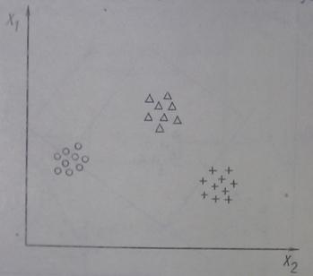
Рис. 12.3. Кластуры объектов данных.
Таким образом, общая идеология распознавания образов
позволяет характеризовать множество данных дистанционного зондирования путем
разделения пространства измерений на непересекающиеся области решений. Тем
самым фактически определяются спектральные классы, которые разделяются
благодаря спектральным свойствам соответствующих типов земного покрова.
Как показывает
практика, дистанционные методы исследования рациональны и эффективны вследствие
того, что во многих случаях спектральные классы совпадают с информационными, т.
е. с классами покрова земной поверхности, имеющими определенный смысл (вид сельхозкультур,
тип почв и т.д.). Спектральные классы должны быть преобразованы в
информационные путем идентификации типа покрова, соответствующего каждому
спектральному классу. Задача построения классификатора системы распознавания
состоит в отыскании оптимальных решающих процедур, необходимых для проведения
идентификации или классификации. При этом можно выделить два
основных момента: вначале необходимо соответствующим образом разбить пространство
признаков на области решений, а затем создать классификатор, который может
отождествлять любой вектор измерений с классом, соответствующим той области
решения, в которую он попал.
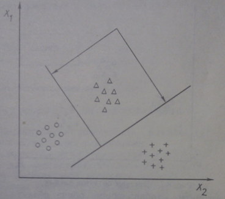
Рис. 12.4. Области и границы решений.
Пусть имеется l классов K1, K2, K3…Kl, определены соответствующие им
области решений и выбрано l функций Ri(x). Последние выбираются
таким образом, что всякая Ri(x)
принимает большее значение по отношению к остальным функциям всегда, когда X принадлежит области решения Ki класса.
Если
предположить, что функции Ri(x)
непрерывны на границах областей, то поверхности, разделяющие смежные классы Ki и Kj, можно определить уравнением вида
Ri(x)- Rj(x)=0
Такие функции,
как мы уже отмечали, называются решающими. Подбирая подходящий вид функции,
можно строить различные по сложности разделяющие поверхности: линейные,
кусочно-линейные, полиномиальные и т. д.. На рис. 12.4 представлен простейший
случай, когда разделение производится линейными гиперплоскостями и решающие
функции при этом имеют вид
Ri(x)=aix1+bix2+ci
.
После того, как величины Ri,
определены, их можно использовать для построения классификатора системы распознавания.
Если, например, необходимо классифицировать произвольный объект X, то вычисляются R1(x), ... , Rl(x) и он
заносится в тот класс, решающая функция которого имеет наибольшее значение.
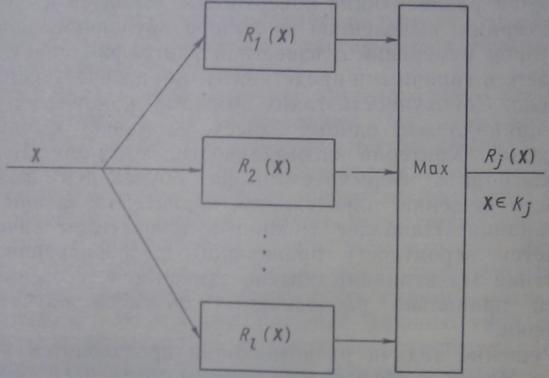
Рис. 12.5. Блок принятия решений в системе
распознавания образов.
Формально можно записать следующее правило классификации. Пусть зафиксирован
некоторый класс Ki.
Полагаем, что X принадлежит этому
классу тогда и только тогда, когда
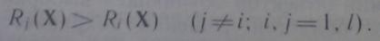
Чтобы исключить случай равенства двух и более значений
решающих функций, можно ввести нуль-класс (Ко). При этом объект X будет считаться неопознанным (система
распознавания дает отказ).
Блок принятия решений, с учетом введенных понятий, показан на рис. 12.5.
Для построения областей решений явным или неявным образом могут
использоваться следующие виды данных: критерий оптимальности, которому должны
удовлетворять области решения; совокупность значений параметров (признаков)
каждого исследуемого объекта, по которым строятся такие области; количество
классов и их условные обозначения; указатель принадлежности каждого объекта
тому или иному классу.
В зависимости от того, какие из этих данных используются. решаются задачи
распознавании, основанные на предварительном обучении или самообучении.
При
наличии всех перечисленных выше условий получаем задачу распознавания с
обучением. В данном случае решающие функции, с помощью которых
onpeделяются разделяющие поверхности, строятся на основе информации, выделенной
из набора обучающих образов (векторов измерений с известной классификацией).
Они считаются типичными представителями интересующих нас классов Совокупность
таких объектов, каждый из которых принадлежит одному классу, называют обучающей
выборкой Критерий оптимальности, которому должны удовлетворигь формируемые по
обучающей выборке области решений,
определяется характером задачи распознавании Наиболее типичным показателем
качества является вероятность правильного распознавания. На практике эта
величина обычно заменяется ее оценкой — долей правильно распознанных объектов
обучающей выборки.
Решение
задачи распознавания производится в два этапа. На этапе обучении по данным
обучающей выборки а соответствии с заданным критерием строят области решения.
На этапе распознавания предъявляются объекты с неизвестной классификацией, В
отношении этих объектов принимается решение о принадлежности их к тому классу,
в область которого они попадают.
При
решении задачи распознавания с обучением принимаются некоторые допущения.
Полагается, что качество распознавания объектов обучающей выборки с помощью
построенных областей решения сохраняется в достаточной степени и для объектов
с неизвестной классификацией. Далее следует допущение о представительности
обучающей выборки. Предполагается, что при правильно выбранных форме областей
решения и критерии оптимальности объем и состав обучающей выборки таковы, что
построенные области окажутся удовлетворительными при классификации объектов на
этапе распознавания. Выбор формы областей решения (типа решающей функции) во
многом определяет успех решения задачи в целом. На практике целесообразно
стремиться к наиболее простым областям решения, что упрощает реализацию задачи
на ЭВМ и повышает степень
уверенности в принятых допущениях. В противном случае стремление повысить
качество распознавания может привести к выбору сложных конфигураций, при
которых допущения, например, могут оказаться
невыполненными из-за детального учета индивидуальных особенностей данной обучающей выборки.
Задачу распознавания с обучением
ИНОГДА называют контролируемой классификацией так,
исследователь, который ее решает, определив обучающие выборки, в некотором смысле контролирует получение границ решения. Он как бы обучает классификатор распознаванию
информационных классов.
Перейдем к рассмотрению другого типа задач. Задачи распознавания, основанные на самообучении, приходится решать тогда, когда имеются исходные данные первых трех или
двух
перечисленных выше видов. В этом случае имеем соответственно задачи распознавания объектов из
классов, количество которых известно, и задачи с неизвестным количеством классов. Результатом классификации в
первом случае является распределение объектов по классам, а во втором еще и их
количество. Так как при решении данного типа задач объекты с известной
классификацией отсутствуют, то в качестве критерия выбираются функции, которые
связывают различное местоположение объектов в пространстве с их
принадлежностью к тому или иному классу. Чем точнее учитывается эта связь, тем
выше получаемое качество распознавания.
Решения задач, основанных на самообучении, могут
использоваться не только для распределения объектов по различным классам, когда
отсутствуют обучающие выборки, но и для анализа структуры собственных областей
классов в задаче распознавания с обучением. Например, можно определить или
проверить их многосвязность или односвязность. Задачи распознавания с
самообучением называют неконтролируемым анализом, так как исследователь в
данном случае мало влияет на установление границ решений.
Рассмотренные выше задачи играют важную роль в проблеме
обработки данных дистанционного зондирования. Для того чтобы провести
оптимальный анализ аэрокосмической информации, необходимо постоянно совмещать
методы контролируемой и неконтролируемой классификации. С одной стороны, это
определяется объемами обучающих выборок, легкостью выделения информационных
классов из спектральных данных и т.д. Если, например, области, подлежащие
анализу, слишком велики и неоднородны, то часто оказывается непрак тично
собирать достаточные обучающие выборки, чтобы характеризовать все типы
покрова. С другой стороны, ввиду ограниченного контроля исследователем неконтролируемая
классификация менее эффективна, когда информационные классы лишь частично
разделены в пространстве измерений.
Разработано большое количество алгоритмов и методов
решения задач распознавания. Вместе с тем не существует универсальных рекомендаций
об использовании того или иного алгоритма или метода. Это зависит от априорной
информации о предметной области, где проводятся исследования, от интуиции и
опыта исследователя и т. д. Жизнеспособность алгоритмов, как правило,
определяется экспериментально.
В последующих параграфах данной главы будут приведены
некоторые типы алгоритмов распознавания, которые применяются на практике.
Следует отметить, что при изложении материала нами
сознательно опущено рассмотрение важных в распознавании образов задач
определения признаков для описания объектов и снижения размерности векторов образов,
потому что большинство разработанных методов решения этих задач являются
специфическими.
В дальнейшем предполагается, что признаки, описывающие
объект распознавания, выбраны наиболее разумно. Надо всегда помнить, что даже
использование наилучшего во всех отношениях классификатора объектов не может
компенсировать небрежный выбор признаков.
12.2. Классы разделяющих
функций.
Выбор разделяющих функций для
классификатора не единствен.
Говорят, что система
распознавания образов ставит в соответствие вектор признаков 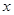 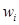
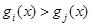 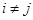
Линейная разделяющая
функция 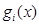
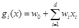
где называется весовым вектором, а 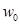
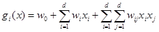
Не нарушая общности,
можно положить 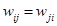 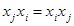 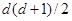
Продолжая вводить
дополнительные члены, такие, как 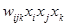
12.3. Критерий
наименьшего среднеквадратичного отклонения.
Рассмотрение классификатора с
наименьшим среднеквадратичным расстоянием наиболее наглядно может быть
проведено для трех классов. Для d-мерного пространства признаков получаем
(d+1)-мерное расширенное пространство признаков, приписывая каждому образу Z
координату, равную -1, для получения 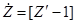
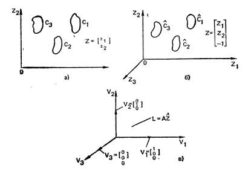
Рис. 12.6.
Классификатор для трех классов, работающий по критерию наименьшего
среднеквадратичного расстояния:
а —
пространство признаков; б — расширенное пространство признаков; в —
пространство решений
Определяем преобразование
А, отображающее 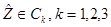 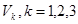 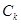 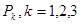
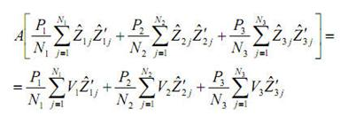
Решая это уровнение относительно A получаем
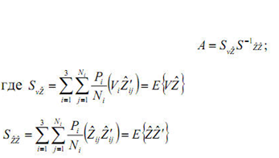
Очевидно, что 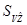 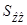 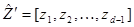 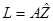 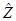 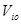 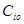
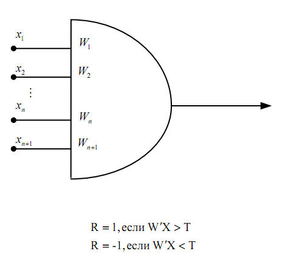
При разбиении
на два класса, реализация классификатора может быть представлена с помощью
порогового элемента. На входе задается две величины. Эти две выходные величины
(реакции порогового устройства) обычно обозначаются как 1 и -1 соответственно.
Если заданы
два множества образов, принадлежащих соответственно классам w1, w2, то решение ищется в виде вектора весов W, обладающего тем свойством, что для
всех образов класса w1, выполняется условие W’X>0, а для всех образов класса w2 - условие W'X < 0. Если образы класса w2 умножить на -1 ,то эквивалентное условие WX
>0 становится общим
для всех образов.
Происхождение
алгоритмов классификации образов с использованием персептронов можно проследить
вплоть до первых экспериментов в области бионики (область науки,
посвященная приложению биологических концепций к электронным устройствам),
которые были связаны с проблемами, возникающими при обучении животных и машин.
В середине 50-х и начале 60-х годов многие исследователи считали, что класс
устройств, предложенных Розспблаттом и называемых обычно перцептронами, представляет
естественную и обладающую большими возможностями модель процесса обучения
машины. Хотя в настоящее время в общем все согласны с тем, что надежды и ожидания,
связанные со свойствами пер-цептронов, оказались чрезмерно оптимистическими,
математические результаты, к которым привело развитие перцептрон-ного подхода,
продолжают играть центральную роль в теории распознавания образов.
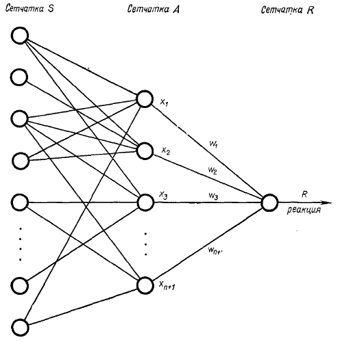
Рис. 12.7.
Основной вариант модели перцептрона.
Основная модель
перцептрона, обеспечивающая отнесение образа к одному из двух заданных классов,
приведена на рис. 12.7. Устройство состоит из сетчатки 5 сенсорных элементов, которые
случайным образом соединены с ассоциативными
элементами второй сетчатки А. Каждый
из элементов второй сетчатки воспроизводит выходной сигнал только в том случае,
если достаточное число сенсорных элементов, соединенных с его входом, находится
в возбужденном состоянии. Сенсорные элементы можно рассматривать в качестве
устройств, с помощью которых вся система воспринимает из внешней среды стимулы,
т. е. как некие измерительные устройства, а ассоциативные элементы— как входную
часть системы.
Реакция всей системы пропорциональна
сумме взятых с определенными весами реакций элементов ассоциативной сетчатки;
таким образом, обозначив через Xi реакцию i-го ассоциативного элемента и
через Wi— соответствующий вес, реакцию системы можно записать как
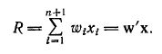
Если R > 0,
значит предъявленный системе образ принадлежит классу C1 если R < 0,
то образ относится к классу C2. Описание этой процедуры классификации вполне
соответствует введенным нами раньше принципам классификации, и, судя по всему,
основная перцептронная модель представляет собой, за исключением сенсорной
сетчатки, не что иное, как реализацию линейной решающей функции.
Схему,
приведенную на рис. 12.7, легко распространить на случай разделения на
несколько классов посредством увеличения числа реагирующих элементов в R-сетчатке. Так,
например, разделение на несколько классов, можно реализовать, добавив М элементов
в R-сетчатку, где М
— число классов. Классификация проводится обычным способом: рассматриваются
значения реакций 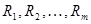 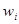 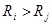
Если задано M классов, допускающий
представление с помощью эталлонных образов z1, z2, …, zm, то евклидово расстояние между произвольным
образом вектора X и эталлоном, определяется соотношением:
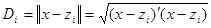
Возведя обе части в квадрат, получим
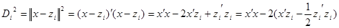
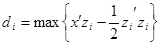
Поскольку классификатор основан на принципе минимального рассояния,
классифицирует образ из наибольшего совпадания с эталоном классов, то этот
подход называется корреляцией или сопоставлением с кластером.
Расстояние Махаланобиса определяется соотношением:
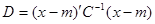
Эта метрика полезна, когда в явном виде присутствуют статистические
характеристики. В выражении выше, C представляет собой ковариационную матрицу образов, m – среднее значение, x –
представляет образ с переменными характеристиками.
На практике, в системах распознавания используют неметрическую функцию
сходства вида:
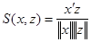
Представляющую собой cos угла, образованного векторами x и z и достигающую max, когда их направления совпадают.